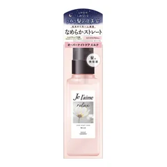

まず1つ（乾かす前に足す人）

ジュレーム
リラックス オーバーナイトケア ミルク 120mL
120mL・洗い流さないミルク
¥1062税込・出典掲載価格
選び方と声
- 選ぶ条件：夜のドライヤーの前に、1つだけ手間を足したい人。オイルだとぺたんとしやすい細い髪の人
- タオルで水気を取ってから、毛先を中心になじませる。熱と湿気から髪を守る成分入りとメーカー公式に記載
- べたつかずにサラッとまとまる、香りがよくて塗る時間が楽しみ、という声が多い
気になる声気になる点：香り以外の変化は感じにくかったという声も。なじみ方は好みが分かれます
販売価格・容量・送料はリンク先でご確認ください